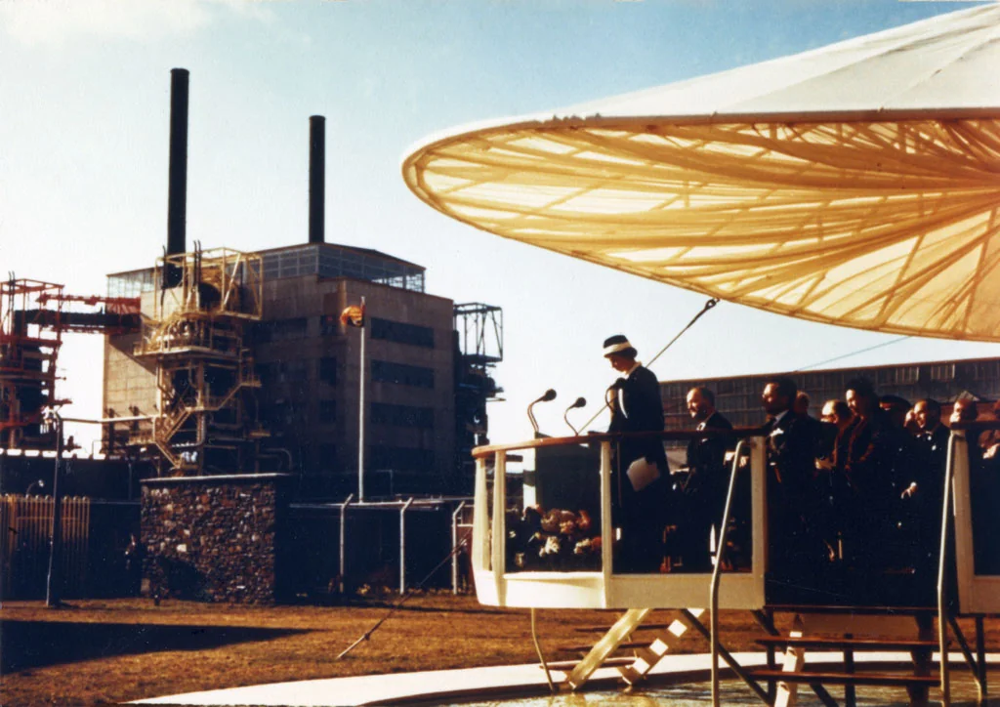
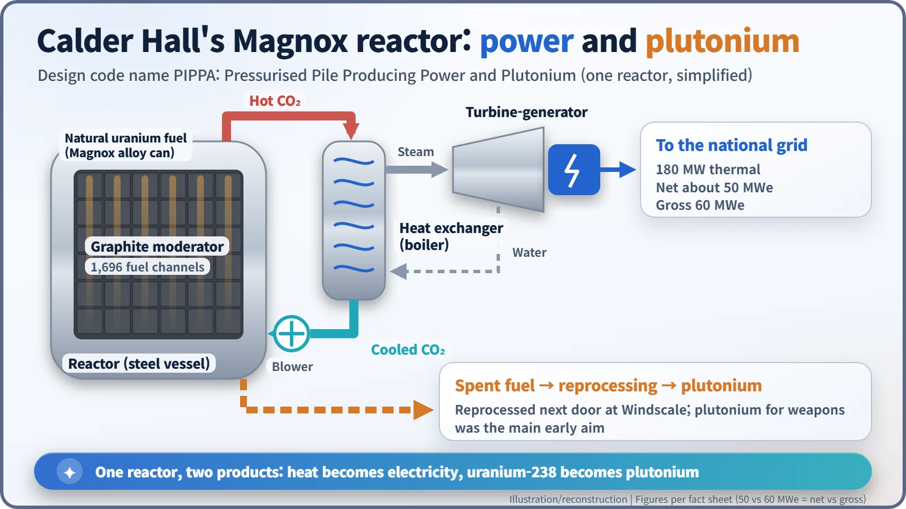
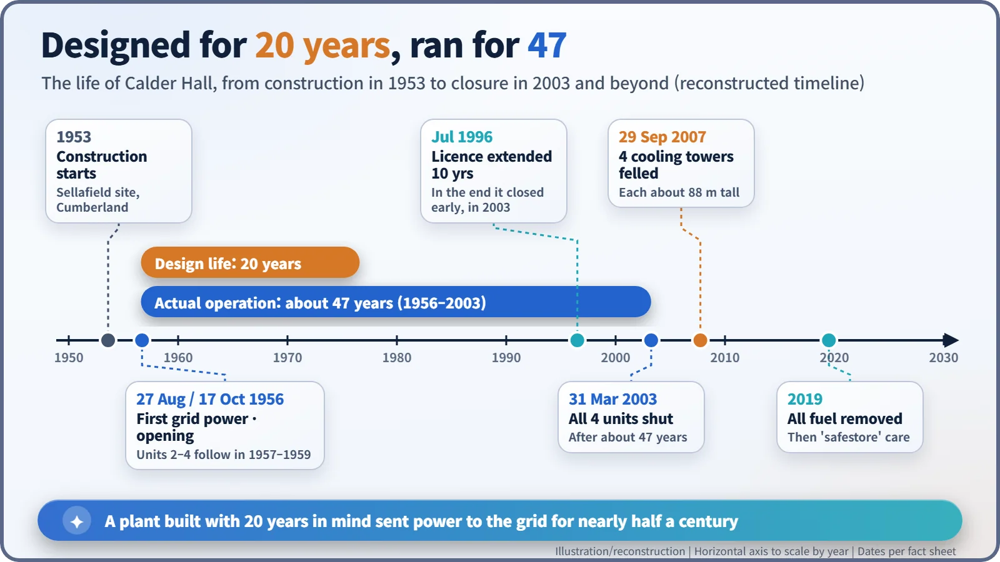

Nuclear History · 179
"Present at the Making of History" — Calder Hall, the First Commercial-Scale Nuclear Power Station (1956)
The Queen pulled a lever on 17 October 1956, but the power had been flowing since August, and the reactors behind it were built to make plutonium as well as electricity.
On 17 October 1956 Queen Elizabeth II opened Calder Hall in Cumbria, England, the first nuclear power station to generate electricity on a full industrial scale. Its four Magnox reactors were built to make plutonium for Britain's weapons as well as power for the grid, and a plant designed for 20 years kept running for about 47, until 2003.
A lever on the control desk
"Your Majesty, on the control desk before you is a lever. When it is pulled, it will switch electric power in the turbine house of the Calder Hall Station into the national grid of the Central Electricity Authority."
That was the cue. On Wednesday 17 October 1956, on the Cumberland coast of north-west England (today's Cumbria), Sir Edwin Plowden, chairman of the UK Atomic Energy Authority (UKAEA), handed the moment to a 30-year-old Queen Elizabeth II (1926–2022). Her reply opened with a line that still sounds like a headline: "Today as power from Calder Hall begins to flow into the national grid, all of us here know that we are present at the making of history." Two days later, the London Gazette printed every speech of the ceremony in full. [1]

The power had been flowing for weeks
Here is the twist: the lever did not deliver Calder Hall's first electricity. Reactor 1 had gone critical in spring 1956 (1 May according to one engineering history; June according to another account), and it was first connected to the grid on 27 August. The October ceremony was a public debut for a plant that had already been run in. [4]
A plutonium factory that also sold electricity
Calder Hall did not begin as a power project. After the US Atomic Energy Act of 1946 cut off nuclear cooperation, Britain needed more plutonium for its own weapons. On the same site already stood the air-cooled Windscale piles, which blew their hot air straight up the chimney. The design team led by Christopher Hinton (1901–1983) asked for more from the next reactor: seal the core in a pressure vessel, cool it with carbon dioxide gas, and use that hot gas to raise steam and turn turbines. The code name was refreshingly honest — PIPPA, for "Pressurised Pile Producing Power and Plutonium." [5]
Construction began in 1953. The station had four reactors of the type later called Magnox, after the magnesium alloy that clad the fuel:
- Fuel: rods of natural, unenriched uranium metal sealed in Magnox alloy cans.
- Moderator: a stack of graphite slowed the neutrons so fission could continue; each reactor had 1,696 fuel channels.
- Coolant: pressurised CO₂, driven by blowers, carried heat to heat exchangers, where steam was raised for the turbines.
Each reactor produced 180 MW of heat and about 50 MWe of electricity. Some sources say 60 MWe; the difference is whether the power the station used itself is subtracted (net) or not (gross). Meanwhile, some of the uranium-238 in the fuel absorbed neutrons and turned into plutonium. Spent fuel went next door to Windscale, where the plutonium was separated. In the early years plutonium was the main purpose, and electricity was regarded almost as a by-product. [3] [4] [5]

A queen who named the weapon
The Queen's reply did not dodge that double identity. "Today we are, in a sense, seeing a solution of that crisis as this new power, which has proved itself to be such a terrifying weapon of destruction, is harnessed for the first time for the common good of our community." She went on: "It may well prove to have been among the greatest of our contributions to human welfare that we led the way in demonstrating the peaceful uses of this new source of power." Earlier the Lord Privy Seal had told the audience that Calder Hall would always have "the pride of having been the first station anywhere in the world to produce electricity from atomic energy on a full industrial scale." [1]
"World's first" depends on what you count
So was Calder Hall the world's first nuclear power station? That depends on the yardstick.
| Criterion | Plant | When |
|---|---|---|
| First electricity from nuclear energy (four light bulbs) | EBR-I, United States | December 1951 |
| First power supplied to a grid | Obninsk, Soviet Union (5 MWe) | June 1954 |
| First on an industrial, commercial scale | Calder Hall, United Kingdom | 1956 |
| First large plant built purely for civilian power | Shippingport, United States | December 1957 |
Britain's Nuclear Decommissioning Authority (NDA) calls Calder Hall "the world's first commercial nuclear power station". Others point out that a plant built partly to make weapons plutonium is hard to call purely commercial. Both views are on the record. [2]
Built for 20 years, ran for 47
Units 2, 3 and 4 followed in 1957–1959, and four reactors of the same design went up at Chapelcross in Scotland. Britain then built a fleet of commercial Magnox stations, and the design was exported, to Japan among other places. [3]
Calder Hall was designed for a 20-year life. It closed on 31 March 2003, after about 47 years. On 29 September 2007 its four cooling towers, each about 88 m tall, were brought down by controlled explosions, and by 2019 all the fuel had been removed. The remaining reactor buildings are to be held in "safestore" while their radioactivity decays. [2] [5]

The lever the Queen pulled was not a power switch in any practical sense. It was a symbol: nuclear energy stepping out of military secrecy onto a public stage. Remember the plutonium standing behind that symbol, and Calder Hall comes into focus as it really was.